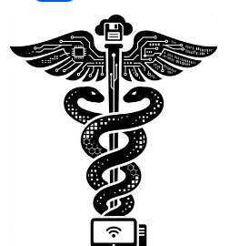
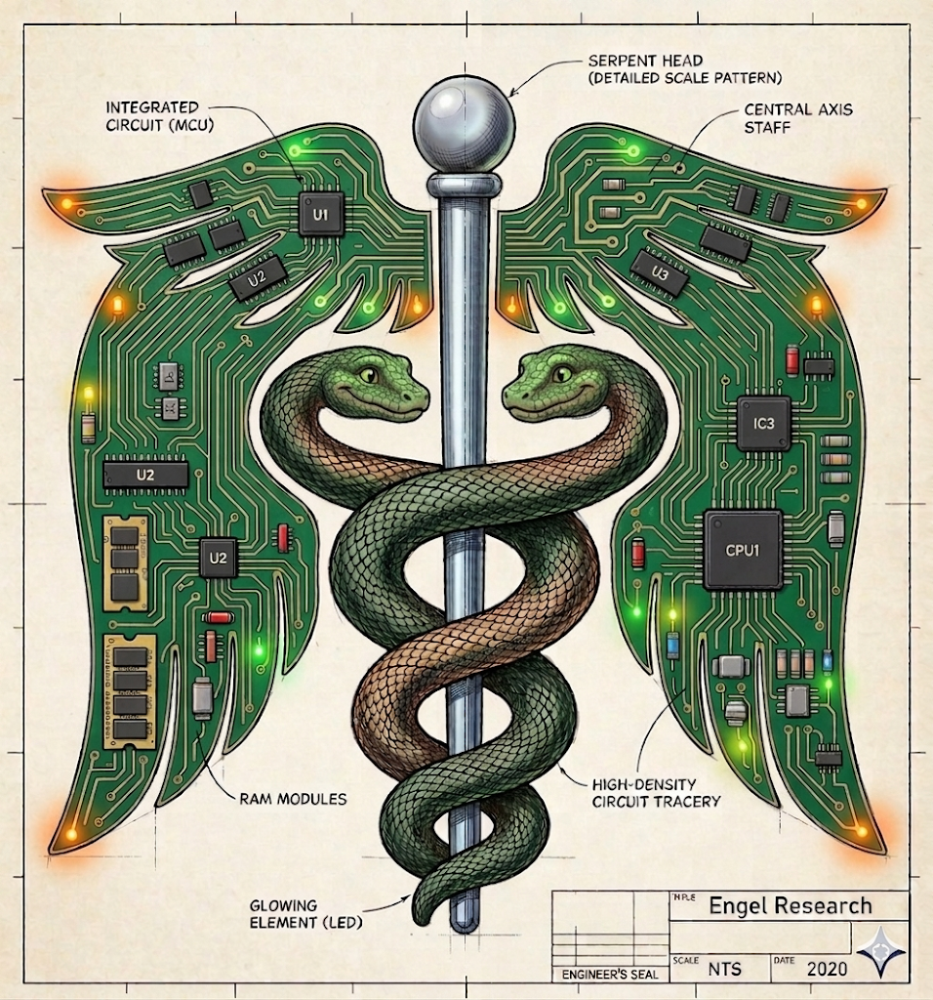

⚕
Agent-Built Clinical Tools
Using Antigravity and Claude Code to rapidly design, build, and iterate on medical software.

Clinical Medicine × Computer Science
EngelResearch, LLC is a small software company exploring how neural networks, transformers, large language models, and agentic AI can sharpen medical reasoning.
About
Medicine is reasoning under uncertainty. So is machine learning. EngelResearch lives at that intersection — building software informed by the bedside and engineered with modern computer science.
Our work began with differential diagnosis tools and has grown alongside AI itself: from classic neural networks to transformers, LLMs, and now autonomous coding agents applied to medical problems.

Our Emblem
The ancient symbol of medicine, rebuilt as a circuit schematic. Two serpents climb a central staff, and the wings are printed circuit boards with processors, memory and glowing LEDs.
It sums up what we do: clinical tradition and computer engineering, designed together.
Evolution
Software to help clinicians structure and rank diagnostic possibilities.
Learning patterns directly from clinical data rather than hand-built rules.
Attention-based architectures for richer modeling of medical text and sequences.
Evaluating and applying LLMs to clinical reasoning and knowledge tasks.
Applying autonomous AI coding agents to accelerate medical software and research.
Current Research
Using Antigravity and Claude Code to rapidly design, build, and iterate on medical software.
Studying how language models approach differential diagnosis — and where they fall short.
Convolutional and transformer networks applied to clinical data and imaging.
Interested in clinical AI, research partnerships, or our work with agentic coding tools?
info@engelresearch.us